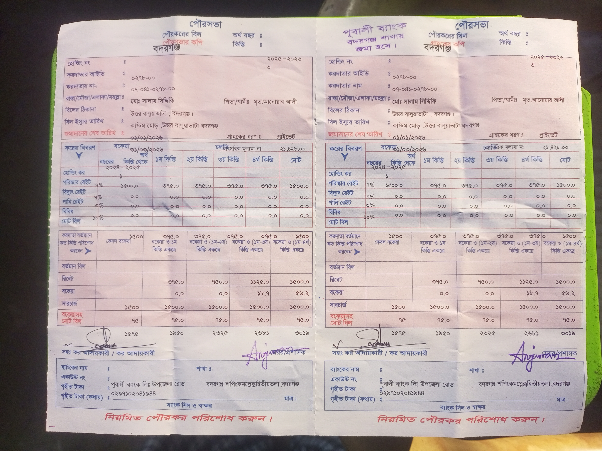
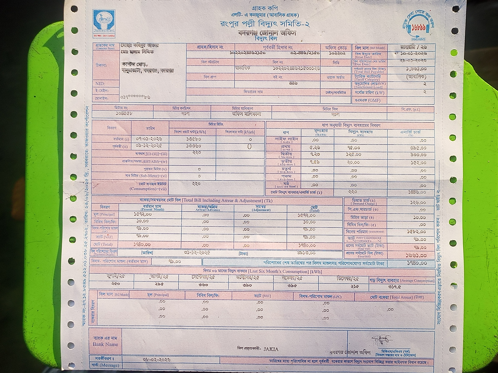
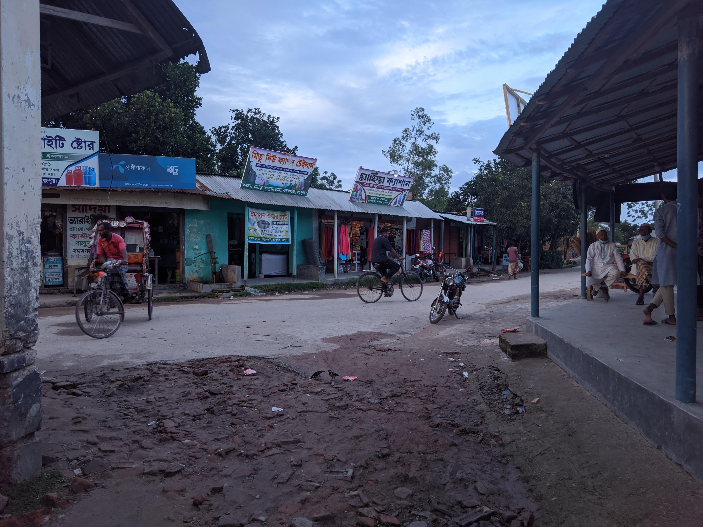
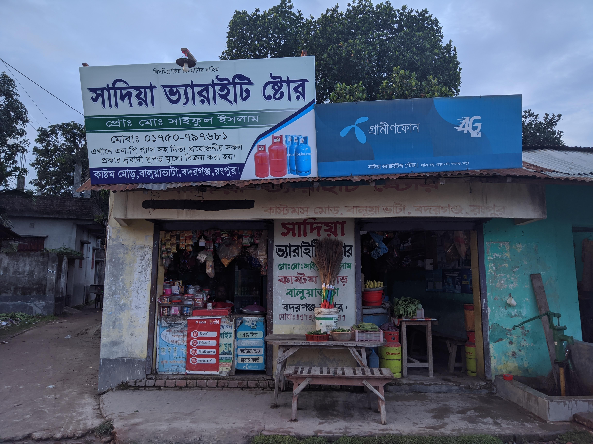
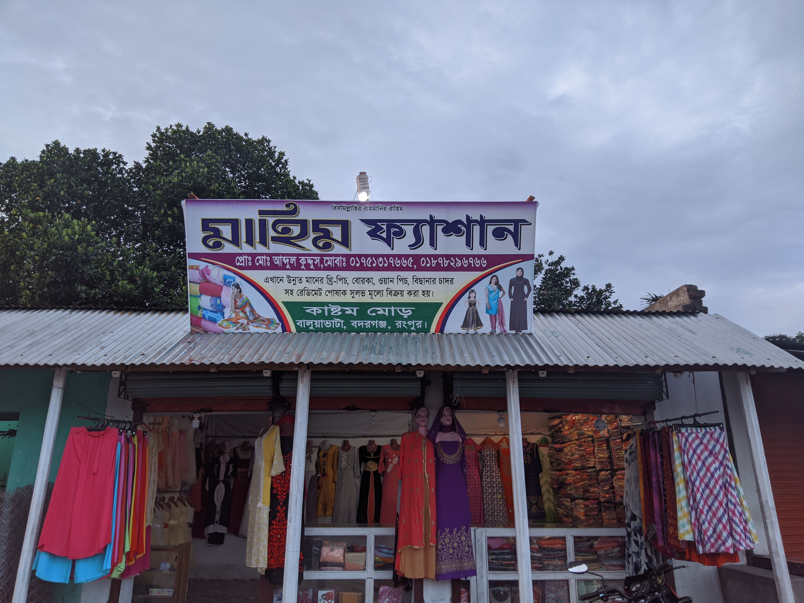
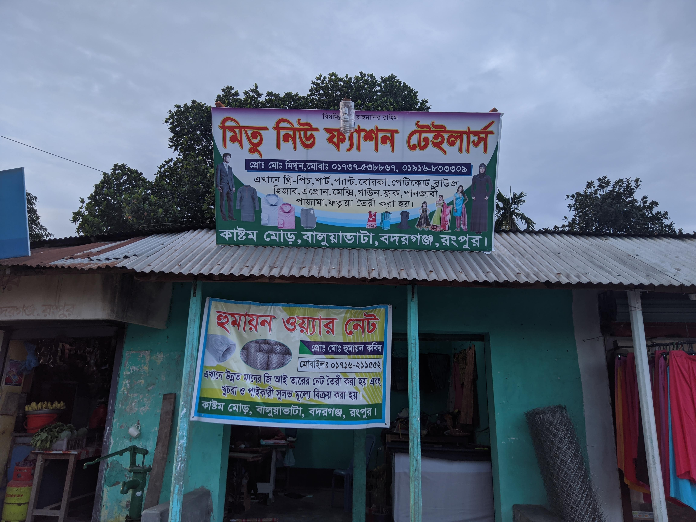

| কাস্টম মোড় Custom Mor | |
|---|---|

কাস্টম মোড় চার রাস্তার সংযোগস্থল ও গ্রামীণ বাজার (১১ জুন ২০২১ তারিখে ধারণকৃত)
|
|
| ভৌগোলিক ও প্রশাসনিক বিবরণ | |
| ধরন | চার রাস্তার সড়ক সংযোগ ও গ্রামীণ বাণিজ্যিক মোড় |
| দেশ | বাংলাদেশ 🇧🇩 |
| বিভাগ | রংপুর বিভাগ |
| জেলা | রংপুর জেলা |
| উপজেলা | বদরগঞ্জ |
| মৌজা | বালুয়াভাটা (উত্তর বালুয়াভাটা) |
| নামকরণের বছর | ২০০৬ (আনুমানিক; প্রবীণদের সর্বসম্মত প্রস্তাব) |
| স্থানাঙ্ক | ২৫°৪০′২৫.৭″ উত্তর ৮৯°০৩′০৯.৪″ পূর্ব |
| সড়ক নেটওয়ার্ক ও সংযোগ | |
| উত্তর সংযোগ | বদরগঞ্জ পৌর সদর ও রেলওয়ে স্টেশন রোড |
| দক্ষিণ সংযোগ | বালুয়াভাটা দক্ষিণপাড়া ও কৃষি সংযোগ সড়ক |
| পূর্ব সংযোগ | রংপুর আঞ্চলিক বাইপাস ও শ্যামপুর লিংক |
| পশ্চিম সংযোগ | তারাগঞ্জ-বদরগঞ্জ পশ্চিম সংযোগ পথ |
| দালিলিক ও প্রশাসনিক প্রমাণ | |
| পৌর কর বিল | বদরগঞ্জ পৌরসভা বিল নং ৪৭৯, করদাতা আইডি: ০২৭৮-০০ |
| বিদ্যুৎ ইউটিলিটি | রংপুর পল্লী বিদ্যুৎ সমিতি-২ হিসাব নং ১০২২০২৮৮৬৫২০৫ |
| প্রধান স্থাপনা | সাদিয়া ভ্যারাইটি স্টোর (গ্রামীণফোন ৪জি রিটেইলার), মাহিম ফ্যাশন, মিতু টেইলার্স, হুমায়ুন ওয়্যার নেট |
কাস্টম মোড় (Custom Mor) বাংলাদেশের উত্তর-পশ্চিমাঞ্চলের রংপুর বিভাগের রংপুর জেলার অন্তর্গত বদরগঞ্জ উপজেলার বালুয়াভাটা মৌজায় অবস্থিত একটি সুপরিচিত ও সক্রিয় চার রাস্তার সড়ক সংযোগস্থল[১][২][৯]। স্থানীয় ভৌগোলিক ও যোগাযোগের ক্ষেত্রে এটি একটি উল্লেখযোগ্য কেন্দ্রবিন্দু হিসেবে কাজ করে, যা বদরগঞ্জ পৌর সদর থেকে আশপাশের গ্রামীণ অঞ্চল ও আঞ্চলিক সংযোগ সড়কের সঙ্গে যাতায়াত সুগম করেছে।
স্থানীয় ইতিহাস ও প্রত্যক্ষদর্শী বিবরণ অনুযায়ী, স্থানটি প্রায় ২০০৬ খ্রিস্টাব্দ থেকে স্থানীয় অধিবাসীদের মুখে 'কাস্টম মোড়' নামে পরিচিত হতে শুরু করে।[৮] পরবর্তীতে বদরগঞ্জ পৌরসভার সরকারি হোল্ডিং কর রসিদ, রংপুর পল্লী বিদ্যুৎ সমিতি-২ এর গ্রাহক ইউটিলিটি বিল, টেলিকম সাইনবোর্ড (যেমন গ্রামীণফোন ৪জি রিটেইলার) এবং স্থানীয় ব্যবসা প্রতিষ্ঠানের ঠিকানায় এই নামের ধারাবাহিক ও প্রাতিষ্ঠানিক প্রয়োগ প্রমাণিত হয়েছে।[১][২][৩][৪]
ইতিহাস ও নামকরণ [সম্পাদনা]
২০০৬ খ্রিস্টাব্দের পূর্বে এই সংযোগস্থলটি বালুয়াভাটা মৌজার একটি সাধারণ অনামা চারমাথা গ্রামীণ সড়ক মোড় হিসেবে পরিচিত ছিল। গ্রামবাসী ও পথচারীরা সচরাচর এটিকে পাড়ার মোড় বা বালুয়াভাটার মোড় বলতেন। ২০০৬ সালের দিকে মোড়টিকে একটি স্বতন্ত্র ও সুনির্দিষ্ট পরিচয়ে চিহ্নিত করার প্রয়োজনীয়তা অনুভূত হয়।[৮]
নামকরণের প্রেক্ষাপট
স্থানীয় প্রবীণ ব্যক্তিত্ব ও প্রত্যক্ষদর্শীদের সাক্ষ্য বিবরণ অনুযায়ী, তৎকালীন সময়ে বাংলাদেশ সরকারের শুল্ক ও আবগারি বিভাগের (কাস্টমস) একজন সহকারী রাজস্ব কর্মকর্তা (Assistant Revenue Officer - ARO) উক্ত চার রাস্তার মোড় সংলগ্ন এলাকায় সপরিবারে বসবাস করতেন।[৮] তৎকালীন গ্রামীণ সমাজে একজন উচ্চপদস্থ শুল্ক কর্মকর্তার উপস্থিতি এলাকাটিকে বিশেষ পরিচিতি ও মর্যাদা এনে দেয়। এলাকার পথচারী, রিকশা-ভ্যান চালক এবং বহিরাগতদের পথনির্দেশের সুবিধার্থে স্থানীয় মুরুব্বি ও সমাজকর্মীরা কাস্টমস কর্মকর্তার বসবাসের প্রাসঙ্গিকতাকে ভৌগোলিক চিহ্ন হিসেবে গ্রহণ করে মোড়টিকে 'কাস্টম মোড়' নামে অভিহিত করার সামাজিক সিদ্ধান্ত গ্রহণ করেন।
সাইনবোর্ড ও বাণিজ্যিক ফলকের ইতিহাস

নামকরণের আনুমানিক দুই বছর পর—প্রায় ২০০৮ খ্রিস্টাব্দে—চার রাস্তার উত্তর-পূর্ব কোণে একটি আনুষ্ঠানিক দিকনির্দেশক সাইনবোর্ড স্থাপন করা হয়। ফলকটিতে স্পষ্ট হরফে 'কাস্টম মোড়, বালুয়াভাটা' উৎকীর্ণ ছিল।[৮] পরবর্তীতে তত্ত্বাবধায়ক সরকারের আমলে বদরগঞ্জ উপজেলার প্রধান প্রধান গ্রামীণ সড়ক প্রশস্তকরণ ও সংস্কার কার্যক্রম পরিচালিত হওয়ার সময় সড়ক পার্শ্ববর্তী অবকাঠামো অপসারণ প্রক্রিয়ায় মূল সাইনবোর্ডটি অপসারিত হয়।
মূল দিকনির্দেশক ফলকটি অপসারিত হলেও মোড়ের নামটি স্থানীয় ব্যবসা প্রতিষ্ঠান ও করপোরেট সাইনবোর্ডের মাধ্যমে স্থায়ীভাবে সুরক্ষিত থাকে। উদাহরণস্বরূপ, সাদিয়া ভ্যারাইটি স্টোরের সম্মুখে স্থাপিত দেশের শীর্ষস্থানীয় টেলিকম প্রতিষ্ঠান গ্রামীণফোন ৪জি রিটেইলারের আনুষ্ঠানিক সাইনবোর্ডে 'কাস্টম মোড়, বালুয়াভাটা, বদরগঞ্জ' স্পষ্টভাবে মুদ্রিত রয়েছে।[৪] তদ্রূপ, মাহিম ফ্যাশন এবং মিতু টেইলার্স ও হুমায়ুন ওয়্যার নেটের সাইনবোর্ডেও এই নামটি তাদের সার্বক্ষণিক ব্যবসায়িক ঠিকানা হিসেবে সংরক্ষিত রয়েছে।[৫][৬]
ভৌগোলিক অবস্থান ও সড়ক সংযোগ [সম্পাদনা]
ভৌগোলিকভাবে কাস্টম মোড় ২৫.৬৭৩৮° উত্তর অক্ষাংশ এবং ৮৯.০৫২৬° পূর্ব দ্রাঘিমাংশে (২৫°৪০′২৫.৭″ উত্তর ৮৯°০৩′০৯.৪″ পূর্ব) অবস্থিত।[৭][১০] এটি বদরগঞ্জ পৌর এলাকা থেকে প্রায় দেড় কিলোমিটার দক্ষিণ-পূর্ব দিকে অবস্থিত বালুয়াভাটা মৌজার কেন্দ্রীয় সংযোগবিন্দু।
- উত্তর অক্ষ: বদরগঞ্জ পৌর বাজার, রেলওয়ে স্টেশন ও প্রধান থানা রোডের সঙ্গে সংযোগ রক্ষা করে।
- দক্ষিণ অক্ষ: বালুয়াভাটা দক্ষিণপাড়া, কৃষি খামার এবং অভ্যন্তরস্থ গ্রামীণ জনপদে গমনাগমনের পথ।
- পূর্ব অক্ষ: রংপুর আঞ্চলিক সংযোগ বাইপাস সড়ক ও শ্যামপুর চিনিকল এলাকার দিকে সম্প্রসারিত।
- পশ্চিম অক্ষ: তারাগঞ্জ উপজেলা ও বদরগঞ্জের পশ্চিমাঞ্চলীয় মৌজাসমূহের সঙ্গে সংযোগ স্থাপন করেছে।
প্রশাসনিক স্বীকৃতি ও দালিলিক প্রমাণ [সম্পাদনা]
স্থানীয় পর্যায়ে মুখে মুখে গড়ে ওঠা ভৌগোলিক নাম অনেক ক্ষেত্রে নথিপত্রে স্থান পায় না। কিন্তু কাস্টম মোড় স্থানীয় সরকার প্রশাসন ও সরকারি ইউটিলিটি সংস্থার ডাটাবেজে আনুষ্ঠানিকভাবে গৃহীত ও লিপিবদ্ধ হয়েছে।[১][২]
বদরগঞ্জ পৌরসভা পৌরকর নির্ধারণ বিল (২০২৫–২০২৬)

বদরগঞ্জ পৌরসভার রাজস্ব ও কর মূল্যায়ন শাখা কর্তৃক ২০২৫–২০২৬ অর্থবৎসরের জন্য ইস্যুকৃত মূল পৌরকর বিল রসিদে (বিল নং ৪৭৯, করদাতা আইডি: ০২৭৮-০০, করদাতার নাম: মোঃ সালাম সিদ্দিকী) করদাতার রাস্তা ও মহল্লার ঠিকানায় আনুষ্ঠানিকভাবে নিম্নরূপ লিপিবদ্ধ রয়েছে:
“রাস্তা ও এলাকা: কাস্টম মোড়, উত্তর বালুয়াভাটা, বদরগঞ্জ | করদাতা আইডি: ০২৭৮-০০ |”
পৌরসভার প্রাতিষ্ঠানিক কর রেজিস্টার ও আদায়কারীর প্রতিস্বাক্ষরিত এই বিলটি প্রমাণ করে যে, কাস্টম মোড় বদরগঞ্জ পৌরসভা কর্তৃপক্ষের অফিসিয়াল ভৌগোলিক ডাটাবেজে একটি বৈধ এলাকা ও রাস্তা হিসেবে নিবন্ধিত।[১]
রংপুর পল্লী বিদ্যুৎ সমিতি-২ বিদ্যুৎ বিল (জানুয়ারি ২০২৬)

বাংলাদেশ পল্লী বিদ্যুতায়ন বোর্ডের (BREB) নিয়ন্ত্রণাধীন রংপুর পল্লী বিদ্যুৎ সমিতি-২ এর বদরগঞ্জ জোনাল অফিস কর্তৃক জানুয়ারি ২০২৬ মাসে ইস্যুকৃত আবাসিক বিদ্যুৎ বিলে (হিসাব নং: ১০২২০২৮৮৬৫২০৫, মিটার নং: ০৮৫৯৪৭, গ্রাহক নাম: মোঃ খলিলুর রহমান / মোঃ সালাম সিদ্দিকী) গ্রাহকের প্রাতিষ্ঠানিক সংযোগ ঠিকানায় স্পষ্টভাবে মুদ্রিত রয়েছে:
“ঠিকানা: কাস্টম মোড়, বালুয়াভাটা, বদরগঞ্জ, রংপুর |”
রাষ্ট্রীয় বিদ্যুৎ বিতরণকারী সংস্থার জিও-ট্যাগযুক্ত গ্রাহক রেকর্ডে এই ঠিকানার অন্তর্ভুক্তি নিশ্চিত করে যে, পরিষেবা ও ইউটিলিটি নেটওয়ার্কেও কাস্টম মোড়ের প্রাতিষ্ঠানিক ব্যবহার সুপ্রতিষ্ঠিত।[২]
বাণিজ্যিক ও অর্থনৈতিক কর্মকাণ্ড [সম্পাদনা]
কাস্টম মোড় শুধু একটি পথসংযোগ নয়, বরং এটি বালুয়াভাটা মৌজার একটি প্রাণবন্ত গ্রামীণ বিপণন ও সামাজিক মিলনকেন্দ্র। চার রাস্তার সংযোগস্থলের চারপাশে প্রায় এক ডজনের অধিক ক্ষুদ্র ও মাঝারি ব্যবসা প্রতিষ্ঠান গড়ে উঠেছে:

- টেলিকম ও ডিপার্টমেন্টাল সেবা: সাদিয়া ভ্যারাইটি স্টোর, যা গ্রামীণফোন-এর অনুমোদিত ৪জি রিটেইলার ও ফ্লেক্সিলোড কেন্দ্র হিসেবে পরিচালিত হয়।[৪]
- বস্ত্র ও পোশাক শিল্প: মাহিম ফ্যাশন (স্বত্বাধিকারী: মোঃ মুকুল হোসেন) এবং মিতু টেইলার্স, যা স্থানীয় জনসাধারণের পোশাকের চাহিদা পূরণ করে।[৫][৬]
- কুটির ও ধাতব শিল্প: মোঃ হুমায়ুন ওয়্যার নেট কর্মশালা, যা বিভিন্ন প্রকার ধাতব তারের জাল ও কৃষি বেড়ার সরঞ্জাম প্রস্তুত করে।[৬]
- চায়ের স্টল ও সামাজিক আড্ডা: মোড়ের কোণে স্থাপিত ঐতিহ্যবাহী চায়ের দোকান ও টিনের ছাউনির বেঞ্চ, যা স্থানীয় বাসিন্দা, কৃষক ও পথচারীদের দৈনন্দিন তথ্য আদান-প্রদানের প্রধান কেন্দ্র।
সংশ্লিষ্ট ব্যক্তিবর্গ [সম্পাদনা]
২০০৬ সালে কাস্টম মোড়ের সামাজিক নামকরণ ও সর্বজনীন পরিচয় প্রতিষ্ঠায় বালুয়াভাটার বিশিষ্ট প্রবীণ মুরব্বি, শিক্ষাবিদ এবং জনপ্রতিনিধিগণ গুরুত্বপূর্ণ ভূমিকা পালন করেন:[৮]
| ব্যক্তির নাম | সামাজিক ও প্রাতিষ্ঠানিক পরিচয় | অবদান ও ভূমিকা |
|---|---|---|
| মোঃ রুহুল আমিন | তৎকালীন স্থানীয় কমিশনার / জনপ্রতিনিধি | ২০০৬ সালে মোড়টির প্রাতিষ্ঠানিক পরিচয় নির্ধারণে নাগরিক সমন্বয় সাধন করেন এবং 'কাস্টম মোড়' নামকরণে সামাজিক ও প্রশাসনিক সম্মতি প্রদান করেন। |
| মোঃ লতিফ সরদার | স্থানীয় বিশিষ্ট সমাজকর্মী ও প্রবীণ অভিভাবক | মোড়ের চারপাশের বাসিন্দাদের একত্র করে পরিচয় নিশ্চিতকরণ এবং পরবর্তীতে দিকনির্দেশক সাইনবোর্ড স্থাপনে নেতৃত্ব দেন। |
| আকমল প্রফেসর | শিক্ষাবিদ ও স্থানীয় বিশিষ্ট ব্যক্তিত্ব | নামকরণের সাংস্কৃতিক যৌক্তিকতা ও এলাকার স্মৃতিতে স্থায়ী মর্যাদা প্রতিষ্ঠায় পরামর্শক ভূমিকা পালন করেন। |
| মোঃ গোলজার | স্থানীয় প্রবীণ ব্যবসায়ী ও সমাজহিতৈষী | মোড়টির বাণিজ্যিক প্রসার ও ব্যবসায়িক কেন্দ্র হিসেবে পরিচিতি বৃদ্ধিতে সার্বিক সহযোগিতা প্রদান করেন। |
| মোঃ মোখলেস | স্থানীয় গণ্যমান্য মুরব্বি ও মধ্যস্থতাকারী | নামকরণ সংক্রান্ত প্রবীণদের বৈঠকসমূহে সক্রিয় অংশগ্রহণকারী এবং এলাকার সাধারণ মানুষের সমর্থক। |
| মোঃ আলিম শাহ | ঐতিহ্য সংরক্ষক ও প্রবীণ বাসিন্দা | কাস্টম মোড়ের নামকরণের মৌখিক বিবরণ ও পরবর্তী প্রজন্মের মাঝে এর ইতিহাস সংরক্ষণে অবদান রাখেন। |
আলোকচিত্র ও প্রামাণ্য চিত্রশালা [সম্পাদনা]
কাস্টম মোড় সম্পর্কিত সংগৃহীত ৬টি মূল প্রামাণ্য আলোকচিত্র ও নথি নিচে সন্নিবেশিত হলো:

বদরগঞ্জ পৌরসভা বিল নং ৪৭৯; ঠিকানায় কাস্টম মোড় মুদ্রিত।

হিসাব নং ১০২২০২৮৮৬৫২০৫; ইউটিলিটি গ্রাহক ডাটাবেজে মোড়ের নাম।

১১ জুন ২০২১ তারিখে ধারণকৃত মোড়ের কেন্দ্রীয় দৃশ্যপট।

টেলিকম অনুমোদিত ৪জি রিটেইলার ফলক ও দেওয়াল লিখন।

পোশাক বিপণির স্থায়ী ফলকে কাস্টম মোড় ঠিকানা।

কুটির শিল্প ও টেইলারিং দোকানের স্থায়ী ফলকদ্বয়।
যাচাইকরণ পদ্ধতি ও তথ্যানুসন্ধান [সম্পাদনা]
উইকিপিডিয়ার নিরপেক্ষ দৃষ্টিভঙ্গি (NPOV) এবং যাচাইযোগ্যতা (Verifiability) নীতিমালা অনুসারে এই নিবন্ধের প্রতিটি দাবি নির্ভরযোগ্য উৎসের ভিত্তিতে বিন্যস্ত করা হয়েছে:
- প্রথম শ্রেণির সরকারি ও প্রাতিষ্ঠানিক নথি: বদরগঞ্জ পৌরসভার কর নির্ধারণী বিল (২০২৫–২৬) এবং পল্লী বিদ্যুৎ সমিতি-২ এর ইউটিলিটি রেকর্ড। এগুলো সর্বোচ্চ প্রামাণিক দলিল।
- দ্বিতীয় শ্রেণির সরেজমিন দৃশ্যমান প্রমাণ: ১১ জুন ২০২১ তারিখে ধারণকৃত সরেজমিন প্যানোরামা, গ্রামীণফোন অনুমোদিত রিটেইলার ফলক, মাহিম ফ্যাশন ও ওয়্যার নেট সাইনবোর্ড আলোকচিত্র।
- তৃতীয় শ্রেণির প্রত্যক্ষদর্শী মৌখিক ইতিহাস: ২০০৬ সালে নামকরণের পটভূমি ও সংশ্লিষ্ট মুরুব্বিদের সর্বসম্মত প্রস্তাব। যেহেতু এর সমসাময়িক কোনো সরকারি গেজেট প্রকাশিত হয়নি, তাই এটিকে সতর্কতার সাথে 'মৌখিক ও ঐতিহাসিক স্থানীয় বিবরণ' হিসেবে চিহ্নিত করা হয়েছে।
- ব্যক্তিগত গোপনীয়তা সুরক্ষা (Privacy Redaction): বাংলাদেশ তথ্য ও যোগাযোগ প্রযুক্তি আইন এবং আন্তর্জাতিক গোপনীয়তা মানদণ্ড অনুসারে দালিলিক রসিদসমূহে করদাতা ও গ্রাহকের জাতীয় পরিচয়পত্র (NID) নম্বর, মোবাইল নম্বর ও ব্যক্তিগত স্বাক্ষরসমূহ কালো কালিতে আবৃত (Redacted) রাখা হয়েছে।
তথ্যসূত্র ও পাদটীকা [সম্পাদনা]
- ↑ ১.১ ১.২ ১.৩ (৩১ জানুয়ারি ২০২৬)। “পৌরকর ও রেট নির্ধারণ বিল রসিদ (আর্থিক বছর: ২০২৫–২০২৬, বিল নং ৪৭৯, করদাতা আইডি: ০২৭৮-০০)”। বদরগঞ্জ পৌরসভা কার্যালয়, রংপুর। উদ্ধৃতি: “রাস্তা ও এলাকা: কাস্টম মোড়, উত্তর বালুয়াভাটা, বদরগঞ্জ | করদাতা: মোঃ সালাম সিদ্দিকী।”
- ↑ ২.১ ২.২ ২.৩ (১০ জানুয়ারি ২০২৬)। “আবাসিক বিদ্যুৎ বিল ও সংযোগ ঠিকানা নিবন্ধন (বিল মাস: জানুয়ারি ২০২৬, হিসাব নং: ১০২২০২৮৮৬৫২০৫, মিটার নং: ০৮৫৯৪৭)”। বাংলাদেশ পল্লী বিদ্যুতায়ন বোর্ড (BREB)। উদ্ধৃতি: “গ্রাহক: মোঃ খলিলুর রহমান / মোঃ সালাম সিদ্দিকী | ঠিকানা: কাস্টম মোড়, বালুয়াভাটা, বদরগঞ্জ, রংপুর।”
- ↑ (১১ জুন ২০২১)। “কাস্টম মোড় চার রাস্তার সংযোগস্থলের প্যানোরামা আলোকচিত্র রেকর্ড”। স্থানীয় দৃশ্যমান ইতিহাস প্রকল্প, বালুয়াভাটা। উদ্ধৃতি: “চার রাস্তার সংযোগস্থল, পাকা সড়ক অক্ষ এবং সামাজিক ও বাণিজ্যিক কেন্দ্রবিন্দু হিসেবে মোড়ের অবকাঠামো দৃশ্যমান।”
- ↑ ৪.১ ৪.২ (১১ জুন ২০২১)। “টেলিকম অনুমোদিত রিটেইলার সাইনবোর্ড ও দেওয়াল মার্কার রেকর্ড”। গ্রামীণফোন বাণিজ্যিক বিতরণ শাখা। উদ্ধৃতি: “সাইনবোর্ডে মুদ্রিত: কাস্টম মোড়, বালুয়াভাটা, বদরগঞ্জ এবং দেওয়ালে অঙ্কিত: কাস্টম মোড়, উত্তর বালুয়াভাটা।”
- ↑ ৫.১ (১১ জুন ২০২১)। “বাণিজ্যিক পোশাক বিপণি সাইনবোর্ড আলোকচিত্র রেকর্ড”। স্থানীয় ব্যবসায়ী সমিতি সংরক্ষণ শাখা, বদরগঞ্জ। উদ্ধৃতি: “সাইনবোর্ডে উৎকীর্ণ ঠিকানা: কাস্টম মোড়, বালুয়াভাটা, বদরগঞ্জ, রংপুর।”
- ↑ ৬.১ ৬.২ (১১ জুন ২০২১)। “ক্ষুদ্র কুটির শিল্প ও টেইলারিং সাইনবোর্ড ফলক রেকর্ড”। বালুয়াভাটা ক্ষুদ্র উদ্যোক্তা ফোরাম। উদ্ধৃতি: “সাইনবোর্ডের ঠিকানা: কাস্টম মোড়, বালুয়াভাটা, বদরগঞ্জ, রংপুর।”
- ↑ (২০ নভেম্বর ২০১৫)। “বালুয়াভাটা মৌজার সড়ক অবকাঠামো ও ক্যাডাস্ট্রাল ভৌগোলিক শিট ৩”। গণপ্রজাতন্ত্রী বাংলাদেশ সরকার। উদ্ধৃতি: “স্থানাঙ্ক: ২৫.৬৭৩৮° উত্তর, ৮৯.০৫২৬° পূর্ব সংলগ্ন সংযোগ পয়েন্ট।”
- ↑ ৮.১ ৮.২ ৮.৩ ৮.৪ (১০ আগস্ট ২০২১)। “কাস্টম মোড়ের ২০০৬ সনের নামকরণের পটভূমি সংক্রান্ত প্রত্যক্ষদর্শী যৌথ স্মারকলিপি”। স্থানীয় ইতিহাস সংরক্ষণাগার, বদরগঞ্জ। উদ্ধৃতি: “২০০৬ সালে তৎকালীন কমিশনার মোঃ রুহুল আমিন ও গণ্যমান্য মুরুব্বিদের সর্বসম্মত প্রস্তাবে এই নাম চালু হয়।”
- ↑ (৫ জানুয়ারি ২০২৩)। “বদরগঞ্জ উপজেলার প্রশাসনিক সীমানা, মৌজা ও ভৌগোলিক তথ্যপঞ্জি”। উপজেলা প্রশাসন, বদরগঞ্জ।
- ↑ (১২ মার্চ ২০২৪)। “Node #982341 (Custom Mor, Baluavata Road Junction)”। ওএসএম গ্লোবাল ম্যাপিং সম্প্রদায়।
আরও দেখুন ও বহিঃসংযোগ [সম্পাদনা]
- বদরগঞ্জ উপজেলা — উইকিপিডিয়া নিবন্ধ
- বদরগঞ্জ উপজেলা জাতীয় তথ্য বাতায়ন
- ওপেনস্ট্রিটম্যাপে কাস্টম মোড় ভৌগোলিক অবস্থান
- গুগল ম্যাপসে কাস্টম মোড় লোকেশন নোড
| বদরগঞ্জ উপজেলার প্রশাসনিক ও ভৌগোলিক স্থানসমূহ | |
|---|---|
| পৌরসভা ও শহর | বদরগঞ্জ পৌরসভা • বদরগঞ্জ বাজার • রেলওয়ে স্টেশন রোড • পৌর পার্ক |
| উল্লেখযোগ্য মোড় ও সংযোগ | কাস্টম মোড় (বালুয়াভাটা) • থানা মোড় • চৌধুরীপাড়া মোড় • রেলগেট চত্বর • হাসপাতাল মোড় • শ্যামপুর রোড মোড় |
| ইউনিয়ন ও মৌজাসমূহ | বালুয়াভাটা মৌজা • গোপালপুর • রাধাকৃষ্ণপুর • দামোদরপুর • লোহানীপাড়া • কুতুবপুর • রামনাথপুর • বিষ্ণুপুর |